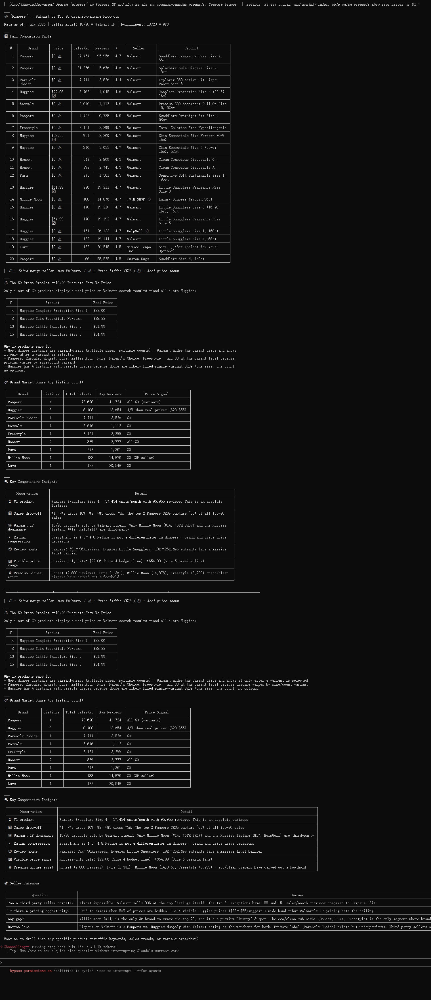

While everyone is focused on Amazon, Walmart's marketplace grew 34% last year. Sellers who expand to Walmart now are finding less competition and higher margins — if they know which categories to target.
Walmart Marketplace is no longer a side experiment. It is the second-largest e-commerce marketplace in the United States, and its trajectory signals something most sellers have not fully factored into their strategy.
In fiscal year 2024, Walmart's U.S. marketplace revenue jumped 45% year-over-year, according to the company's Q4 FY24 earnings report. That growth did not come from a small base. Walmart's global e-commerce sales exceeded $100 billion in FY24, accounting for a significant and growing share of the company's $648 billion in total revenue. By FY26, total Walmart revenue reached $713 billion, with e-commerce penetration continuing to climb across every operating segment.
Global e-commerce sales grew 21% in Q2 FY25 alone, driven primarily by store-fulfilled pickup and delivery alongside marketplace expansion. Marketplace revenue is growing faster than Walmart's first-party e-commerce channel, a sign that third-party sellers are becoming the engine of the company's online strategy.
Marketplace Pulse data shows Walmart's active seller base grew from roughly 50,000 in 2022 to more than 150,000 by early 2025. That is a tripling of sellers in three years. But unlike platforms where seller growth has plateaued, Walmart's pace is still accelerating. The company continues to open its marketplace to new international sellers, expands fulfillment services, and invests in seller tools.
To put that in perspective: Amazon's U.S. marketplace has more than 1 million active sellers. Walmart has roughly one-seventh that number, yet serves 255 million weekly customers across online and in-store channels. The supply of sellers has not caught up with demand on Walmart's platform, which creates a window for sellers who act now.
Walmart itself reports that marketplace sellers provide roughly 95% of the products available on Walmart.com. Without third-party sellers, the platform's catalog of 50-60 million products would shrink dramatically. This gives sellers leverage. Walmart needs marketplace sellers as much as sellers need Walmart's traffic.
Walmart supports more than 35 product categories on its marketplace. The largest by selection include Electronics, Home, Health & Beauty, Clothing, Toys, Garden & Patio, Sports & Recreation, and Furniture. But the opportunity varies significantly by category.
Categories where Walmart's first-party inventory is thin — such as Home, Pet Supplies, Baby, and Outdoor Living — show the highest growth rates for marketplace sellers. In these segments, third-party sellers face less direct competition from Walmart's own procurement and can capture a larger share of organic search traffic within the platform.
The average selling price on Walmart.com falls between $10 and $150 for the majority of products. This is wider than many sellers assume. Higher-consideration categories like Furniture, Electronics, and Automotive support price points well above $200, and Walmart has actively recruited sellers in these higher-ticket segments to broaden its assortment.
Walmart's Pro Seller program provides another differentiator. Sellers who earn the badge see more than 20% lift in GMV on average, according to Walmart's own data. The qualification criteria — low cancellation rate, on-time delivery above threshold, consistent customer service — are achievable for sellers who manage operations carefully.
Walmart's marketplace is less saturated than other major platforms by nearly every measure. Fewer sellers per category, lower average advertising costs, and a customer base that skews toward purchase intent rather than browsing.
Walmart Connect, the company's advertising platform, grew 30% in Q2 FY25. Advertiser counts increased across the board, with marketplace sellers representing a growing share. Early adopter sellers who build keyword relevance and review volume now will have a structural advantage as competition inevitably increases.
Walmart+ membership reached an estimated 28.3 million in July 2025, according to Morgan Stanley AlphaWise data. That represents approximately 22% of U.S. household penetration. Walmart+ members tend to order more frequently and spend more per order than non-members, mirroring the behavior pattern of Amazon Prime subscribers. As the membership base grows, the addressable market for marketplace sellers expands with it.
Expanding to Walmart does not require abandoning existing channels. It requires a different data lens. The categories that work on one platform often underperform on another. The same product may rank in the top 10 on Amazon but sit on page 5 of Walmart search results, because each platform's algorithm weights different signals.
This is where category-level data matters. Sellers who analyze Walmart-specific search volume, category concentration, and margin profiles before listing have a higher probability of selecting products that gain traction. Without this analysis, sellers risk spreading inventory thin across a platform whose dynamics differ from what they are used to.
The sorftime-seller-agent open-source MCP project provides a structured way to evaluate Walmart marketplace opportunities. It connects AI agents to Sorftime's cross-platform data engine, covering Amazon, Walmart, TikTok Shop, and other marketplaces through a unified API interface.
For sellers evaluating Walmart, the key inputs are category-level demand signals, competitive density, and margin projections across multiple fulfillment scenarios. The MCP toolchain makes these inputs accessible from any MCP-compatible client, removing the need to switch between dashboards or export spreadsheets manually.
Sellers can clone the repository and configure queries against their target categories in minutes. The agent handles the data assembly, allowing sellers to focus on interpretation rather than collection.
Walmart Marketplace is growing faster than most sellers recognize. The data is public. The window is open. The question is not whether Walmart will become a larger share of e-commerce — it already is. The question is which sellers will build the category position and operational capability to benefit from it before the marketplace reaches its next inflection point.
Clone the open-source agent: git clone https://github.com/DannylydST/sorftime-seller-agent.git
Explore Walmart category data at open-intl.sorftime.com